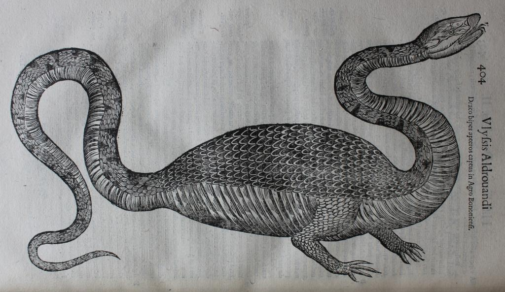
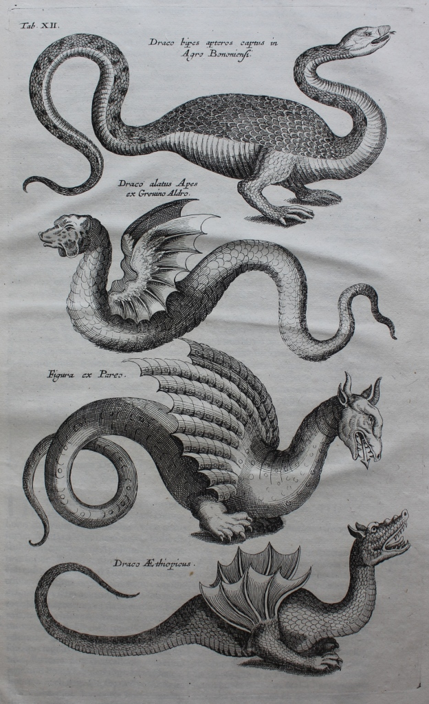

A Journey Through History, Culture & Innovation
One of Ulisse Aldrovandi’s most treasured exhibits was the ‘Dragon of Bologna’, a specimen which was reputed to have been killed in 1572 and which Aldrovandi later exhibited in his public museum. He naturally included it in his book on the history of serpents and dragons and it has attracted attention ever since from scholars who have sought to identify what type of animal the ‘Dragon of Bologna’ was and what its appearance signified.

The ‘Dragon of Bologna’ in Ulisse Aldrovandi, Serpentum, et draconum historiæ libri duo (Bologna, 1640), p. 404.
Aldrovandi presents two different types of evidence: a description of the dragon and two images, one of which we see here and another, in colour and similar, in his Tavole di animali (a work not in the Worth Library but available online). His description and images provide vital clues as to the real origin of the ‘Dragon of Bologna’ – and to the popularity of dragons in early modern museums. Since we know that Aldrovandi insisted on pictorial accuracy we can be fairly sure that his representation of the ‘Dragon of Bologna’ was a faithful representation.
However, as Phil Senter, LaRhonda C. Hill and Brandon J. Moton have convincingly argued, though the image might be faithful, the object itself was a fake.[1] By analysing the images and Aldrovandi’s detailed description Senter et al. have drawn attention to the following parts of the dragon:
They conclude that ‘The dragon of Bologna, described by Ulisse Aldrovandi, was a grass snake (Natrix natrix) to which was added the torso of a fish and the forelimbs of a common toad (Bufo bufo)’.[2]
Did Aldrovandi know his ‘Dragon of Bologna’ was a fake? Almost certainly, for he was aware of, and drew attention to, other fakes. Senter et al. suggest that, in his description, Aldrovandi in fact hinted that the ‘Dragon of Bologna’ was not all it purported to be – his commentary likened the various parts of the dragon to the three animals from which it was composed and he included information which, as a naturalist, he knew to be highly dubious.[3]
Why then did Aldrovandi include it in his museum? He wouldn’t have been the first to resort to creating a fake dragon for propaganda effect (see the example of the Barberini dragon on the winged dragons page), but it is unlikely that he was the fabricator of this particular hoax. However, although he probably hadn’t created it himself he would have been conscious that the inclusion of the creature in his museum could be a marketing bonanza. He was certainly interested in using the ‘Dragon of Bologna’ for his own ends and soon began work on his book on serpents and dragons. Noting that reports on the dragon spread widely, Paula Findlen argues that Aldrovandi was keen to maximise the discovery to his own advantage and he clearly used the object to draw attention to his museum.[4] However, he had to be careful because, while the ‘Dragon of Bologna’ might represent an enormous marketing opportunity, it also had attendant risks since it was not just of zoological interest but could also involve him in a political scandal.
The ‘Dragon of Bologna’ had appeared on 13 May 1572, the same day that a citizen of the city had become pope. Ugo Buoncompagni’s (1502-1585) elevation as Pope Gregory XIII was a swift one, coming less than twenty-four hours after the start of the conclave. The reason for this was because Ugo had, as papal legate to King Philip II of Spain (1527-1598), gained the support of the Spanish king, a support which greatly aided his elevation to the papacy. However, as the appearance of the fake dragon on 13 May 1572 at his home city demonstrates, he clearly had local enemies as it seems likely that its appearance was a deliberate act to discredit the new pope. His enemies would have been very aware of the propaganda possibilities of such marvels: the example of Martin Luther’s and Philip Melancthon’s polemical use of the ‘papal ass’ was within living memory and provided evidence that this type of political trick could prove a potent polemical weapon against the papacy. Dragons generally had a bad press in sixteenth-century Italy – Satan was often depicted in dragon form – so by linking Gregory XIII’s election with the appearance of a fearsome dragon, the conspirators could be fairly confident that their ruse would work to their political advantage. It was a cunning plan because it cleverly evoked the coat of arms of the new pope’s family, which included a winged dragon. Thus the appearance of the ‘Dragon of Bologna’ reinforced a link between Gregory XIII and a mythical beast considered a force of destruction.
Aldrovandi, as a cousin of the new pope, was thus faced with a tricky situation. As Senter et al. suggest, he had a number of options: he could either publically declare it a hoax (which might have led to him becoming a target for the anti-Gregory XIII faction in Bologna), or he could laud it as a true dragon (which might cause political difficulties for the new pope), or he could do exactly what he did do: report on it by concentrating on the natural parts of its make-up, thus neutralizing the political sting in its tail. As Findlen concludes, ‘In this fashion, the naturalist turned a potentially disastrous occurrence into a providential act of patronage for his museum. By explaining away the serpent as an example of nature’s fecundity rather than a diabolical catastrophe, he diffused its saturnine implications, scientifically securing the foundation of the new papacy for his patrons in Rome’.[5]
Despite this his papal cousin doesn’t appear to have been particularly impressed by Aldrovandi’s efforts. In a letter to Fabio Albergati (1538-1606), written on 20 October 1602, Aldrovandi recounted the ultimate failure of his project:
Given the fact that the dragon is the coat of arms of the illustrious Boncompagni family, I sent to Rome a painting of the said dragon together with a relation of its discovery, and a history in five books entitled ‘Dracologia’. I visited the illustrious Cardinal of San Sisto [Fillippo Boncompagni, the pope’s nephew] when he stopped at Bologna on his way to Venice. On that occasion, I promised to dedicate the work to him, if that would have pleased him. But I realised that he did not care for the work, and so I turned myself away from the enterprise.[6]
This explains why a work which was written in 1572 to cash in on a potential market remained unpublished during the author’s life and would only be published in 1639, twenty-four years after his death. To make matters worse, by 1602 the object itself had disappeared due to curatorial neglect (or perhaps, as Ruffini suggests, because the original had simply disintegrated).[7]
For Gregory XIII had options too. As Ruffini points out, Gregory XIII might not have lauded the 1572 ‘Dragon of Bologna’ but he decided to turn the Boncompagni’s coat of arms into an asset, rather than a liability. He deliberately chose to use a winged dragon as part of his new papal coat of arms and encouraged a re-evaluation of dragon iconography. Ruffini notes that Filippo Sega (1537-1596), a fellow Bolognese whose career had been sponsored to a great extent by Gregory XIII, wrote to Aldrovandi on 1 June 1572, that the ‘Dragon of Bologna’s’ appearance ‘is almost like an emblem, or an impresa miraculously revealed by the just God, to declare the true and perfect nature of our dragon, that today reigns and governs with prudence, swiftness of thought, and strength of resolution’.[8] For Gregory XIII, keen to protect his position on the papal throne, the dragon as emblem was far less problematic than the dragon as object.

The Dragon of Bologna and other dragons from Aldrovandi, included in Joannes Jonstonus, Historiae naturalis: De serpentibus (Amsterdam, 1657), Tab. XII.
Sources
Aldrovandi, Ulisse, Serpentum, et draconum historiæ libri duo (Bologna, 1640).
Findlen, Paula, Possessing Nature: Museum, Collecting, and Scientific Culture in Early Modern Italy (University of California Press, 1994).
Jonstonus, Joannes, Historiae naturalis: De serpentibus (Amsterdam, 1657).
Ruffini, Marco, ‘A Dragon for the Pope: Politics and Emblematics at the court of Greogry XIII’, Memoirs of the American Academy in Rome, 54 (2009), 83-105.
Senter, Phil, La Rhonda C. Hill and Brandon J. Moton, ‘Solution to a 440-year-old Zoological Mystery: The Case of Aldrovandi’s Dragon’, Annals of Science, 70: 4 (2013), 531-537.
Text: Dr. Elizabethanne Boran, Librarian of the Edward Worth Library, Dublin.
[1] Phil Senter, La Rhonda C Hill and Brandon J. Moton, ‘Solution to a 440-year-old Zoological Mystery: The Case of Aldrovandi’s Dragon’, Annals of Science, 70: 4 (2013), 531-537.
[2] Ibid., 536.
[3] Ibid.
[4] Paula Findlen, Possessing Nature: Museum, Collecting, and Scientific Culture in Early Modern Italy (University of California Press, 1994), p. 18.
[5] Ibid., p. 21.
[6] Quoted in Marco Ruffini, ‘A Dragon for the Pope: Politics and Emblematics at the court of Gregory XIII’, Memoirs of the American Academy in Rome, 54 (2009), 94.
[7] Ibid., p. 95, fn 40.
[8] Ibid., p. 91.
Our user-friendly interface allows you to seamlessly navigate between articles and visualize their locations on an interactive map, while our commitment to editorial excellence ensures that every piece is engaging, informative, and accurate. The Discovering Bologna team has meticulously crafted every typographic detail, from font families and sizes to colors, margins, aspect ratios, and captivating images with captivating captions, to truly reflect the graphic theme and ambiance of this captivating city.
Join us on this digital adventure and explore the wonders of Bologna like never before, all from the comfort of your own home. Discovering Bologna: Unraveling the secrets of the city, one story at a time.